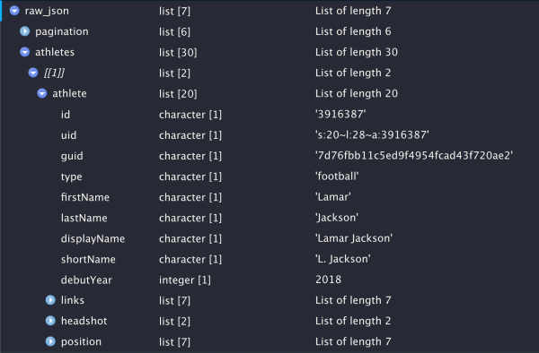

View(raw_json)
Don’t bury the lede
While many R programmers are comfortable with lists, vectors, dataframes, tibbles - JSON has long been a source of pain and/or fear for many.
Because this is going to be a bit of a journey, I don’t want to bury the lede. I’ve got the final code below, which is just a few lines, and a major helper package for examining nested lists such as JSON. Most of this post is about some approaches to exploring JSON outputs and deeply nested lists. Additionally the tidyverse team even has an article on various approaches to “rectangling” nested data/JSON here.
We’re using another NFL example this week, namely we are collecting data from ESPN’s Quarterback Rating (QBR) API endpoint. The output website that this API feeds is available here and the API endpoint itself is available here.
RStudio Viewer
The RStudio viewer is also super useful for navigating, once you have the data in R
— Hadley Wickham (@hadleywickham) May 25, 2020
Additionally, the RStudio IDE itself has a lovely way of parsing through JSON files, including the ability to output the code to access specific parts of JSON objects!
First - open the raw_json with the RStudio viewer.
Once it is open you can search for specific object names or navigate similarly to listviewer.

Once you search and find something of interest (for example athletes object), you can click on the scroll to open it as a temp object in the viewer, or just click the table-arrow button to copy the code to access this level of the object to the console.
listviewer
Secondly, the listviewer package is also fantastic! It lets you explore JSON interactively in a similar way to the RStudio Viewer. We can use this to interactively explore the data before we start coding away.
Because we’re looking at the 2019 season, I know that Lamar Jackson is the top QB in the dataset, and we can guess at some of the other columns by going to the actual webpage this API is building. From that we can assume there are columns for player name, team name, QBR, PAA, PLAYS, etc.
I’ll let you do this interactively because that’s how’d you use in RStudio, and try searching for:
- Lamar Jackson – important for finding the QB names
- 83 – this one is important as a data point
In the interactive jsonedit() viewer below:
# interactive list or JSON viewer
# note that you can change the view to raw JSON or the more
# interactive `View` option
listviewer::jsonedit(raw_json, height = "800px", mode = "view")Now as you’re searching notice that it provides the depth/level you’re in. The only awkward part is like JavaScript it indexes from 0… so as usual note that index == 0 is index == 1 in R. The listviewer author does have a little helper function in this regard.
For example:
If you search for 83 and click on the 83 cell, you’ll get the following location:
object > athletes > 0 > categories > 0 > totals > 0
which is equivalent to the following in R:
raw_json$athletes[[1]]$categories[[1]]$totals[[1]][[1]]
The listviewer strategy can allow you to explore interactively, while the code below is more of moving through the JSON object in R.
Let’s get into the code itself to extract and work with the JSON data.
The code
This utilizes purrr to get at the various components, but I’ll also show how to do this with mostly base R.
library(tidyverse)
library(jsonlite)
library(httr)
# link to the API output as a JSON file
url_json <- "https://site.web.api.espn.com/apis/fitt/v3/sports/football/nfl/qbr?region=us&lang=en&qbrType=seasons&seasontype=2&isqualified=true&sort=schedAdjQBR%3Adesc&season=2019"
# get the raw json into R
raw_json <- httr::GET(url_json) %>%
httr::content()
# get names of the QBR categories
category_names <- pluck(raw_json, "categories", 1, "labels") %>% tolower()
# create the dataframe and tidy it up
ex_output <- pluck(raw_json, "athletes") %>%
enframe() %>%
unnest_wider(value) %>%
unnest_wider(athlete) %>%
select(displayName, teamName:teamShortName, headshot, categories) %>%
hoist(categories,
data = list(1, "totals")) %>%
mutate(data = map(data, ~set_names(.x, nm = category_names))) %>%
select(-categories) %>%
unnest_wider(data) %>%
mutate(headshot = pluck(headshot, "href"))
glimpse(ex_output)Rows: 30
Columns: 13
$ displayName <chr> "Lamar Jackson", "Patrick Mahomes", "Drew Brees", "Dak P…
$ teamName <chr> "Ravens", "Chiefs", "Saints", "Cowboys", "Seahawks", "Li…
$ teamShortName <chr> "BAL", "KC", "NO", "DAL", "SEA", "DET", "HOU", "MIA", "T…
$ tqbr <chr> "83.0", "77.7", "73.3", "71.9", "71.5", "71.3", "70.5", …
$ pa <chr> "66.7", "55.8", "33.7", "48.1", "43.0", "27.0", "42.3", …
$ qbp <chr> "613", "585", "419", "690", "674", "353", "662", "620", …
$ tot <chr> "103.7", "97.3", "62.6", "93.1", "90.9", "56.1", "91.6",…
$ pas <chr> "55.0", "71.6", "53.1", "70.7", "58.3", "44.5", "52.0", …
$ run <chr> "39.1", "14.3", "1.6", "10.0", "10.6", "1.6", "19.8", "6…
$ exp <chr> "0.0", "0.0", "0.0", "0.0", "0.0", "0.0", "0.0", "0.0", …
$ pen <chr> "2.2", "5.0", "1.9", "2.6", "1.5", "1.9", "1.4", "3.7", …
$ qbr <chr> "82.3", "79.4", "75.7", "72.8", "71.2", "74.7", "71.2", …
$ sac <chr> "-7.4", "-6.5", "-6.0", "-9.7", "-20.6", "-8.0", "-18.5"…Now that you have explored the raw data via jsonedit and you see where we are going with this, we can actually try playing around with it in R.
It’s Turtles all the way down
At it’s heart JSON is essentially nested lists of lists of strings, vectors, or other objects - it’s really just lists full of other objects all the way down.
While there are many reasons WHY JSON is actually a great format for things like… surprise JavaScript! It isn’t the easiest to work with in R for interactive coding as the trusty old dataframe/tibble.
My goal today is to show you a few techniques from tidyr that can make quick work of most cleanly structured JSON, although there are weird examples out in the wild of JSON formats that are not as straightforward.
Raw Data and Libraries
Today we need the tidyverse and jsonlite packages. We can read in the JSON via jsonlite::fromJSON() on the raw url string. Huge shoutout to ROpenSci, Jeroen Oooms, Duncan Temple Lang, and Lloyd Hilaiel for this package! A basic vignette can be found here.
First off note that I’m using fromJSON() which has simplifyVector = TRUE - this means some lists will automatically get converted to data.frames, matrices, etc. I’ll be using fromJSON() for my example today.
After reviewing this post, Hadley Wickham mentioned that he often prefers jsonlite::read_json() as it doesn’t do this conversion and leaves everything as a list. His approach is at the end of this blogpost.
Viewing JSON
I highly recommend that you DON’T blindy call str() on JSON objects - you’ll get several pages of stuff output to your console.
I will almost always default to starting with a tool like listviewer::jsonedit() that you get a feel for what the structure looks like. Alternatively, you can use of the examples below to work your way through JSON files more programatically in just R.
Per my friend Josiah Parry, str() has a max.level argument - this is very helpful for JSON as it lets you slowly expand the depth of what you’re looking at!
Level 1
str(raw_json, max.level = 1)List of 7
$ pagination :List of 6
$ athletes :List of 30
$ currentSeason :List of 5
$ requestedSeason:List of 5
$ glossary :List of 10
$ categories :List of 1
$ currentValues :List of 13We can see that the JSON file at depth 1 has info about the pages returned, athletes in our dataset, what season it is, glossary of terms, categories, and current values.
However some of those lists are actually reporting as lists of lists and lists of dataframes, so let’s try one level deeper.
Level 2
Now we can see that pagination is just character strings of length 1 after two levels, however athletes has: two objects, a dataframe called athlete with 30 rows, and a list called categories is a list of length 30 (which aligns with the length of the athlete dataframe).
This is probably the most interesting data to us, as we’re looking for about 30-32 QBs from this API endpoint. Now, how do we actually get at these list objects?
str(raw_json, max.level = 2)List of 7
$ pagination :List of 6
..$ count: int 30
..$ limit: int 50
..$ page : int 1
..$ pages: int 1
..$ first: chr "http://site.api.espn.com:80/apis/fitt/v3/sports/football/nfl/qbr?isqualified=true&lang=en&qbrtype=seasons®io"| __truncated__
..$ last : chr "http://site.api.espn.com:80/apis/fitt/v3/sports/football/nfl/qbr?isqualified=true&lang=en&qbrtype=seasons®io"| __truncated__
$ athletes :List of 30
..$ :List of 2
..$ :List of 2
..$ :List of 2
..$ :List of 2
..$ :List of 2
..$ :List of 2
..$ :List of 2
..$ :List of 2
..$ :List of 2
..$ :List of 2
..$ :List of 2
..$ :List of 2
..$ :List of 2
..$ :List of 2
..$ :List of 2
..$ :List of 2
..$ :List of 2
..$ :List of 2
..$ :List of 2
..$ :List of 2
..$ :List of 2
..$ :List of 2
..$ :List of 2
..$ :List of 2
..$ :List of 2
..$ :List of 2
..$ :List of 2
..$ :List of 2
..$ :List of 2
..$ :List of 2
$ currentSeason :List of 5
..$ year : int 2021
..$ displayName: chr "2021"
..$ startDate : chr "2021-07-17T07:00:00.000+0000"
..$ endDate : chr "2022-02-16T07:59:00.000+0000"
..$ type :List of 6
$ requestedSeason:List of 5
..$ year : int 2019
..$ displayName: chr "2019"
..$ startDate : chr "2019-07-31T07:00:00.000+0000"
..$ endDate : chr "2020-02-06T07:59:00.000+0000"
..$ type :List of 6
$ glossary :List of 10
..$ :List of 2
..$ :List of 2
..$ :List of 2
..$ :List of 2
..$ :List of 2
..$ :List of 2
..$ :List of 2
..$ :List of 2
..$ :List of 2
..$ :List of 2
$ categories :List of 1
..$ :List of 6
$ currentValues :List of 13
..$ qbrType : chr "seasons"
..$ sport : chr "football"
..$ league : chr "nfl"
..$ season : int 2019
..$ seasontype : int 2
..$ week : NULL
..$ conference : int 9
..$ isQualified: logi TRUE
..$ limit : int 50
..$ page : int 1
..$ lang : chr "en"
..$ sort :List of 2
..$ region : chr "us"Get at the list
Because the JSON file is parsed into R as nested lists, we can access various parts of it through base R with either the $ or with [[ + name. Full details around subsetting lists and vectors are available in Advanced R.
Let’s try these out by trying to access:
- raw_json to athletes (raw_json[["athletes"]]) - Looking at it’s structure, again using the max.level argument to prevent extra printing.
I’d like to note that I’ll be switching back and forth a bit between $ and [[ subsetting, as both accomplish the same thing, where $ is faster to type, but [[ is a bit more strict. Also to access by numerical position, you HAVE to use [[.
Again, full details around subsetting lists and vectors are available in Advanced R. This is definitely worth reading for edge cases, pitfalls, and lots of nice examples that go beyond the scope of this blog post.
List of 30
$ :List of 2
$ :List of 2
$ :List of 2
$ :List of 2
$ :List of 2
$ :List of 2
$ :List of 2
$ :List of 2
$ :List of 2
$ :List of 2
$ :List of 2
$ :List of 2
$ :List of 2
$ :List of 2
$ :List of 2
$ :List of 2
$ :List of 2
$ :List of 2
$ :List of 2
$ :List of 2
$ :List of 2
$ :List of 2
$ :List of 2
$ :List of 2
$ :List of 2
$ :List of 2
$ :List of 2
$ :List of 2
$ :List of 2
$ :List of 2List of 30
$ :List of 2
$ :List of 2
$ :List of 2
$ :List of 2
$ :List of 2
$ :List of 2
$ :List of 2
$ :List of 2
$ :List of 2
$ :List of 2
$ :List of 2
$ :List of 2
$ :List of 2
$ :List of 2
$ :List of 2
$ :List of 2
$ :List of 2
$ :List of 2
$ :List of 2
$ :List of 2
$ :List of 2
$ :List of 2
$ :List of 2
$ :List of 2
$ :List of 2
$ :List of 2
$ :List of 2
$ :List of 2
$ :List of 2
$ :List of 2Access the dataframe
We can get to the raw values for a specific player by going one list deeper and we now see an output of str() that looks pretty close to a dataframe!
List of 20
$ id : chr "3916387"
$ uid : chr "s:20~l:28~a:3916387"
$ guid : chr "7d76fbb11c5ed9f4954fcad43f720ae2"
$ type : chr "football"
$ firstName : chr "Lamar"
$ lastName : chr "Jackson"
$ displayName : chr "Lamar Jackson"
$ shortName : chr "L. Jackson"
$ debutYear : int 2018
$ links :List of 7
$ headshot :List of 2
$ position :List of 7
$ status :List of 4
$ age : int 25
$ teamName : chr "Ravens"
$ teamShortName: chr "BAL"
$ teams :List of 1
$ slug : chr "lamar-jackson"
$ teamId : chr "33"
$ teamUId : chr "s:20~l:28~t:33"Now there’s still some sticky situations here, namely that some of the future columns are still lists. We’ll deal with that a little bit later.
Access the lists
We can change our 3rd call to categories instead of athlete to check out the other object with the player values. We see that we can get at the raw values for each of the categories here. Note that the code raw_json$athletes[[1]] is only giving us 1 of the 30 total players. Changing the [[1]] to [[2]] or [[3]] would give us the 2nd/3rd players in the list respectively.
# json -> list --> vector of player values
raw_json$athletes[[1]]$categories[[1]]$totals %>% unlist() [1] "83.0" "66.7" "613" "103.7" "55.0" "39.1" "0.0" "2.2" "82.3"
[10] "-7.4" We could check out the other items in categories like so, but we see that the name/display elements are not very helpful at length of 1. I’m much more interested in the totals and ranks columns as they have length 10.
# json -> list -> dataframe -> dataframe w/ list columns!
raw_json$athletes[[1]]$categories[[1]] %>% str(max.level = 1)List of 4
$ name : chr "general"
$ displayName: chr "General "
$ totals :List of 10
$ ranks :List of 10So let’s check out the 3rd list and what is in it. Now if you’re like me, this is starting to feel a bit hairy! We’re 7 levels deep into one object and this is just 1 output of a total of 30!
Stick with me for one more example and then we’ll get into purrr!
[1] "83.0" "66.7" "613" "103.7" "55.0" "39.1" "0.0" "2.2" "82.3"
[10] "-7.4" So we know:
- The QB names and teams (raw_json$athletes[[ROW_NUMBER]]$athlete)
- Their stats are in a different part of the JSON file (aw_json$athletes[[ROW_NUMBER]]$categories)
If you wanted to you could combine the athlete dataframe with their stats with a for loop. There are additional way of optimizing this (potentially convert to matrix and then to data.frame), but I just want to show that it’s possible and fairly readable! An example with lapply is below as well. Note that since we’re not pre-allocating our data.frame, this is likely the slowest method. It’s ok for our 30 iteration example, but is likely not the best strategy for large JSON files.
length_df <- length(raw_json[["athletes"]])
pbp_out <- data.frame()
category_names <- raw_json[["categories"]][[1]][["labels"]] %>% unlist()
var_select <- c("displayName", "teamName", "teamShortName")
for (i in 1:length_df){
athlete_vec <- raw_json[["athletes"]][[i]][["athlete"]][var_select]
# grab each QBs stats and convert to a vector of type double
raw_vec <- as.double(raw_json[["athletes"]][[i]][["categories"]][[1]][["totals"]])
# split each stat into it's own list with the proper name
split_vec <- split(raw_vec, category_names)
combine_vec <- c(athlete_vec, split_vec)
# convert the list into a dataframe
pbp_df_loop <- cbind.data.frame(combine_vec)
# combine the 30 QB's stats into the empty data.frame
pbp_out <- rbind(pbp_out, pbp_df_loop)
}
# take a peek at the result!
glimpse(pbp_out)Rows: 30
Columns: 13
$ displayName <chr> "Lamar Jackson", "Patrick Mahomes", "Drew Brees", "Dak P…
$ teamName <chr> "Ravens", "Chiefs", "Saints", "Cowboys", "Seahawks", "Li…
$ teamShortName <chr> "BAL", "KC", "NO", "DAL", "SEA", "DET", "HOU", "MIA", "T…
$ EXP <dbl> 0, 0, 0, 0, 0, 0, 0, 0, 0, 0, 0, 0, 0, 0, 0, 0, 0, 0, 0,…
$ PA <dbl> 66.7, 55.8, 33.7, 48.1, 43.0, 27.0, 42.3, 30.2, 19.0, 27…
$ PAS <dbl> 55.0, 71.6, 53.1, 70.7, 58.3, 44.5, 52.0, 47.6, 18.1, 54…
$ PEN <dbl> 2.2, 5.0, 1.9, 2.6, 1.5, 1.9, 1.4, 3.7, 2.3, 1.1, 5.8, 5…
$ QBP <dbl> 613, 585, 419, 690, 674, 353, 662, 620, 374, 598, 745, 5…
$ QBR <dbl> 82.3, 79.4, 75.7, 72.8, 71.2, 74.7, 71.2, 66.6, 67.2, 65…
$ RUN <dbl> 39.1, 14.3, 1.6, 10.0, 10.6, 1.6, 19.8, 6.3, 11.7, 2.7, …
$ SAC <dbl> -7.4, -6.5, -6.0, -9.7, -20.6, -8.0, -18.5, -13.1, -13.7…
$ TOT <dbl> 103.7, 97.3, 62.6, 93.1, 90.9, 56.1, 91.6, 70.7, 45.8, 7…
$ TQBR <dbl> 83.0, 77.7, 73.3, 71.9, 71.5, 71.3, 70.5, 68.3, 64.2, 64…Let’s try this again, but with a function and iterating that function with lapply.
var_select <- c("displayName", "teamName", "teamShortName")
# how many rows?
length_df <- length(raw_json[["athletes"]])
# category names again
category_names <- raw_json[["categories"]][[1]][["labels"]] %>% unlist()
# create a function to apply
qbr_stat_fun <- function(qb_num){
# get each QB name/team
athlete_vec <- raw_json[["athletes"]][[qb_num]][["athlete"]][var_select]
# grab each QBs stats and convert to a vector of type double
raw_vec <- as.double(raw_json[["athletes"]][[qb_num]][["categories"]][[1]][["totals"]])
# split each stat into it's own list with the proper name
split_vec <- split(raw_vec, category_names) %>% rev()
# return the lists
combine_vec <- c(athlete_vec, split_vec)
combine_vec
}
# use apply to generate list of lists
list_qbr_stats <- lapply(1:length_df, qbr_stat_fun)
# Combine the lists into a dataframe
list_pbp_df <- do.call("rbind.data.frame", list_qbr_stats)
# check it out
list_pbp_df %>% glimpse()Rows: 30
Columns: 13
$ displayName <chr> "Lamar Jackson", "Patrick Mahomes", "Drew Brees", "Dak P…
$ teamName <chr> "Ravens", "Chiefs", "Saints", "Cowboys", "Seahawks", "Li…
$ teamShortName <chr> "BAL", "KC", "NO", "DAL", "SEA", "DET", "HOU", "MIA", "T…
$ TQBR <dbl> 83.0, 77.7, 73.3, 71.9, 71.5, 71.3, 70.5, 68.3, 64.2, 64…
$ TOT <dbl> 103.7, 97.3, 62.6, 93.1, 90.9, 56.1, 91.6, 70.7, 45.8, 7…
$ SAC <dbl> -7.4, -6.5, -6.0, -9.7, -20.6, -8.0, -18.5, -13.1, -13.7…
$ RUN <dbl> 39.1, 14.3, 1.6, 10.0, 10.6, 1.6, 19.8, 6.3, 11.7, 2.7, …
$ QBR <dbl> 82.3, 79.4, 75.7, 72.8, 71.2, 74.7, 71.2, 66.6, 67.2, 65…
$ QBP <dbl> 613, 585, 419, 690, 674, 353, 662, 620, 374, 598, 745, 5…
$ PEN <dbl> 2.2, 5.0, 1.9, 2.6, 1.5, 1.9, 1.4, 3.7, 2.3, 1.1, 5.8, 5…
$ PAS <dbl> 55.0, 71.6, 53.1, 70.7, 58.3, 44.5, 52.0, 47.6, 18.1, 54…
$ PA <dbl> 66.7, 55.8, 33.7, 48.1, 43.0, 27.0, 42.3, 30.2, 19.0, 27…
$ EXP <dbl> 0, 0, 0, 0, 0, 0, 0, 0, 0, 0, 0, 0, 0, 0, 0, 0, 0, 0, 0,…Now, I typically don’t suggest using a for loop as per Advanced R this approach can be prone to some common pitfalls which can lead to performance deficits or side effects. Similarily, the apply family of functions are very powerful but for some folks they find that it doesn’t quite fit with their mental model or is inconsistent in the expected output.
As an alternative to loops and/or apply, we can use purrr, AND purrr can also help us a lot with actually parsing through the JSON itself! I also think that other tidyverse tools like tidyr for unnest_wider and unpack/hoist are useful here as alternative strategies!
Enter purrr
purrr is usually thought of for using functional programming as alternatives to for loops and for the concept of “Iteration without repetition”. Overviews of purrr are covered a bit deeper in R4DS and in one of my previous blog posts.
purrr::pluck()
The first function from purrr we’ll use is pluck, which provides a consistent and generalized form of [[. This allows you to quickly move through lists and nested lists.
Let’s get back to our QB data with pluck! There are still a lot of elements we don’t need, but we’ll get rid of those when we put all the data together.
raw_json %>%
# equivalent to raw_json[["athletes"]][[1]][["athlete"]]
purrr::pluck("athletes", 1, "athlete") %>%
str(max.level = 1)List of 20
$ id : chr "3916387"
$ uid : chr "s:20~l:28~a:3916387"
$ guid : chr "7d76fbb11c5ed9f4954fcad43f720ae2"
$ type : chr "football"
$ firstName : chr "Lamar"
$ lastName : chr "Jackson"
$ displayName : chr "Lamar Jackson"
$ shortName : chr "L. Jackson"
$ debutYear : int 2018
$ links :List of 7
$ headshot :List of 2
$ position :List of 7
$ status :List of 4
$ age : int 25
$ teamName : chr "Ravens"
$ teamShortName: chr "BAL"
$ teams :List of 1
$ slug : chr "lamar-jackson"
$ teamId : chr "33"
$ teamUId : chr "s:20~l:28~t:33"What about that pesky headshot column that reports as a list of lists? We can just add an additional depth argument with "headshot" and see that it gives us a URL to the QB’s photo and a repeat of the QB’s name. We’ll use this a bit later to get the URL only.
purrr::map
So pluck allows us to quickly get to the data of interest, but what about replacing our for loop to get at the vectors for each of the QB’s individual stats? map() can help us accomplish this!
Define a function
Again, purrr is used for functional programming, so we need to define a function to iterate with. We’ll define this as get_qbr_data() and test it out! It gets us a nicely extracted named numeric vector. The names are useful as when we go to unnest_wider() the dataset it will automatically assign the column names for us.
# get names of the QBR categories with pluck
category_names <- pluck(raw_json, "categories", 1, "labels") %>% unlist()
category_names [1] "TQBR" "PA" "QBP" "TOT" "PAS" "RUN" "EXP" "PEN" "QBR" "SAC" # Get the QBR stats by each player (row_n = row number of player in the df)
get_qbr_data <- function(row_n) {
player_stats <- raw_json %>%
purrr::pluck("athletes", row_n, "categories", 1, "totals") %>%
# assign names from category
set_names(nm = category_names)
player_nm <- raw_json %>%
purrr::pluck("athletes", row_n, "athlete") %>%
keep(names(.) %in% c("displayName", "teamName", "teamShortName")) %>%
unlist()
headshot <- raw_json %>%
purrr::pluck("athletes", row_n, "athlete", "headshot", "href")
#output named list
c(player_nm, headshot = headshot, player_stats)
}
# test the function
get_qbr_data(1)$displayName
[1] "Lamar Jackson"
$teamName
[1] "Ravens"
$teamShortName
[1] "BAL"
$headshot
[1] "https://a.espncdn.com/i/headshots/nfl/players/full/3916387.png"
$TQBR
[1] "83.0"
$PA
[1] "66.7"
$QBP
[1] "613"
$TOT
[1] "103.7"
$PAS
[1] "55.0"
$RUN
[1] "39.1"
$EXP
[1] "0.0"
$PEN
[1] "2.2"
$QBR
[1] "82.3"
$SAC
[1] "-7.4"Note, while this looks like a 1x10 dataframe, it’s still just a vector with name attributes.
List of 14
$ displayName : chr "Lamar Jackson"
$ teamName : chr "Ravens"
$ teamShortName: chr "BAL"
$ headshot : chr "https://a.espncdn.com/i/headshots/nfl/players/full/3916387.png"
$ TQBR : chr "83.0"
$ PA : chr "66.7"
$ QBP : chr "613"
$ TOT : chr "103.7"
$ PAS : chr "55.0"
$ RUN : chr "39.1"
$ EXP : chr "0.0"
$ PEN : chr "2.2"
$ QBR : chr "82.3"
$ SAC : chr "-7.4"Put it all together
We can use our defined function, purrr::pluck() and purrr::map to build our final dataframe!
Let’s start by extracting the core dataframe with player name, team name, and the headshot url!
We can use our get_qbr_data() to do just that and grab the stats from the categories/totals portion of the JSON along with the QB metadata from the athletes portion.
qbr_df <- 1:length(raw_json$athletes) %>%
map_dfr(get_qbr_data) %>%
mutate(across(TQBR:SAC, as.double))
qbr_df %>% glimpse()Rows: 30
Columns: 14
$ displayName <chr> "Lamar Jackson", "Patrick Mahomes", "Drew Brees", "Dak P…
$ teamName <chr> "Ravens", "Chiefs", "Saints", "Cowboys", "Seahawks", "Li…
$ teamShortName <chr> "BAL", "KC", "NO", "DAL", "SEA", "DET", "HOU", "MIA", "T…
$ headshot <chr> "https://a.espncdn.com/i/headshots/nfl/players/full/3916…
$ TQBR <dbl> 83.0, 77.7, 73.3, 71.9, 71.5, 71.3, 70.5, 68.3, 64.2, 64…
$ PA <dbl> 66.7, 55.8, 33.7, 48.1, 43.0, 27.0, 42.3, 30.2, 19.0, 27…
$ QBP <dbl> 613, 585, 419, 690, 674, 353, 662, 620, 374, 598, 745, 5…
$ TOT <dbl> 103.7, 97.3, 62.6, 93.1, 90.9, 56.1, 91.6, 70.7, 45.8, 7…
$ PAS <dbl> 55.0, 71.6, 53.1, 70.7, 58.3, 44.5, 52.0, 47.6, 18.1, 54…
$ RUN <dbl> 39.1, 14.3, 1.6, 10.0, 10.6, 1.6, 19.8, 6.3, 11.7, 2.7, …
$ EXP <dbl> 0, 0, 0, 0, 0, 0, 0, 0, 0, 0, 0, 0, 0, 0, 0, 0, 0, 0, 0,…
$ PEN <dbl> 2.2, 5.0, 1.9, 2.6, 1.5, 1.9, 1.4, 3.7, 2.3, 1.1, 5.8, 5…
$ QBR <dbl> 82.3, 79.4, 75.7, 72.8, 71.2, 74.7, 71.2, 66.6, 67.2, 65…
$ SAC <dbl> -7.4, -6.5, -6.0, -9.7, -20.6, -8.0, -18.5, -13.1, -13.7…So that’s it! A few different approaches to get to the same result, some of the ways to interact with nested JSON, and doing it all with either mostly base or tidyverse. So the next time you interact with JSON, I hope you feel better equipped to work with it!
One more example
If you are using a recent version of tidyr (>= 1.1) - check out Hadley’s approach to this!
Note that he is using jsonlite::read_json() rather than fromJSON, this doesn’t simplify and keeps everything as it’s natural list-state. With tidyr::unnest() and tidyr::hoist() this is easy to work with!
Don’t forget to check out the rectangling guide from the tidyverse team.
library(tidyverse)
library(jsonlite)
# link to the API output as a JSON file
url_json <- "https://site.web.api.espn.com/apis/fitt/v3/sports/football/nfl/qbr?region=us&lang=en&qbrType=seasons&seasontype=2&isqualified=true&sort=schedAdjQBR%3Adesc&season=2019"
# get the raw json into R
raw_json_list <- jsonlite::read_json(url_json)
# get names of the QBR categories
category_names <- pluck(raw_json_list, "categories", 1, "labels")
# create tibble out of athlete objects
athletes <- tibble(athlete = pluck(raw_json_list, "athletes"))
qbr_hadley <- athletes %>%
unnest_wider(athlete) %>%
hoist(athlete, "displayName", "teamName", "teamShortName") %>%
unnest_longer(categories) %>%
hoist(categories, "totals") %>%
mutate(totals = map(totals, as.double),
totals = map(totals, set_names, category_names)) %>%
unnest_wider(totals) %>%
hoist(athlete, headshot = list("headshot", "href")) %>%
select(-athlete, -categories)
# Is it the same as my version?
all.equal(qbr_df, qbr_hadley)[1] TRUETLDR
library(tidyverse)
library(jsonlite)
library(httr)
# link to the API output as a JSON file
url_json <- "https://site.web.api.espn.com/apis/fitt/v3/sports/football/nfl/qbr?region=us&lang=en&qbrType=seasons&seasontype=2&isqualified=true&sort=schedAdjQBR%3Adesc&season=2019"
# get the raw json into R
raw_json <- url_json %>%
httr::GET() %>%
httr::content()
# get names of the QBR categories
category_names <- pluck(raw_json, "categories",1, "labels") %>% unlist()
# Get the QBR stats by each player (row_n = player)
get_qbr_data <- function(row_n) {
player_stats <- raw_json %>%
purrr::pluck("athletes", row_n, "categories", 1, "totals") %>%
# assign names from category
set_names(nm = category_names)
player_nm <- raw_json %>%
purrr::pluck("athletes", row_n, "athlete") %>%
keep(names(.) %in% c("displayName", "teamName", "teamShortName")) %>%
unlist()
headshot <- raw_json %>%
purrr::pluck("athletes", row_n, "athlete", "headshot", "href")
#output named list
c(player_nm, headshot = headshot, player_stats)
}
# create the dataframe and tidy it up
qbr_df <- 1:length(raw_json$athletes) %>%
map_dfr(get_qbr_data) %>%
mutate(across(TQBR:SAC, as.double))
qbr_df %>%
gt::gt_preview() %>%
gt::text_transform(gt::cells_body(headshot), gt::web_image)| displayName | teamName | teamShortName | headshot | TQBR | PA | QBP | TOT | PAS | RUN | EXP | PEN | QBR | SAC | |
|---|---|---|---|---|---|---|---|---|---|---|---|---|---|---|
| 1 | Lamar Jackson | Ravens | BAL |  |
83.0 | 66.7 | 613 | 103.7 | 55.0 | 39.1 | 0 | 2.2 | 82.3 | -7.4 |
| 2 | Patrick Mahomes | Chiefs | KC |  |
77.7 | 55.8 | 585 | 97.3 | 71.6 | 14.3 | 0 | 5.0 | 79.4 | -6.5 |
| 3 | Drew Brees | Saints | NO |  |
73.3 | 33.7 | 419 | 62.6 | 53.1 | 1.6 | 0 | 1.9 | 75.7 | -6.0 |
| 4 | Dak Prescott | Cowboys | DAL |  |
71.9 | 48.1 | 690 | 93.1 | 70.7 | 10.0 | 0 | 2.6 | 72.8 | -9.7 |
| 5 | Russell Wilson | Seahawks | SEA |  |
71.5 | 43.0 | 674 | 90.9 | 58.3 | 10.6 | 0 | 1.5 | 71.2 | -20.6 |
| 6..29 | ||||||||||||||
| 30 | Mason Rudolph | Steelers | PIT |  |
36.2 | -12.9 | 336 | 16.9 | 7.2 | -1.3 | 0 | 3.2 | 36.8 | -7.8 |
Expand for Session Info
─ Session info ───────────────────────────────────────────────────────────────
setting value
version R version 4.2.0 (2022-04-22)
os macOS Monterey 12.2.1
system aarch64, darwin20
ui X11
language (EN)
collate en_US.UTF-8
ctype en_US.UTF-8
tz America/Chicago
date 2022-04-28
pandoc 2.18 @ /Applications/RStudio.app/Contents/MacOS/quarto/bin/tools/ (via rmarkdown)
quarto 0.9.294 @ /usr/local/bin/quarto
─ Packages ───────────────────────────────────────────────────────────────────
package * version date (UTC) lib source
dplyr * 1.0.8 2022-02-08 [1] CRAN (R 4.2.0)
forcats * 0.5.1 2021-01-27 [1] CRAN (R 4.2.0)
ggplot2 * 3.3.5 2021-06-25 [1] CRAN (R 4.2.0)
httr * 1.4.2 2020-07-20 [1] CRAN (R 4.2.0)
jsonlite * 1.8.0 2022-02-22 [1] CRAN (R 4.2.0)
purrr * 0.3.4 2020-04-17 [1] CRAN (R 4.2.0)
readr * 2.1.2 2022-01-30 [1] CRAN (R 4.2.0)
sessioninfo * 1.2.2 2021-12-06 [1] CRAN (R 4.2.0)
stringr * 1.4.0 2019-02-10 [1] CRAN (R 4.2.0)
tibble * 3.1.6 2021-11-07 [1] CRAN (R 4.2.0)
tidyr * 1.2.0 2022-02-01 [1] CRAN (R 4.2.0)
tidyverse * 1.3.1 2021-04-15 [1] CRAN (R 4.2.0)
[1] /Library/Frameworks/R.framework/Versions/4.2-arm64/Resources/library
──────────────────────────────────────────────────────────────────────────────